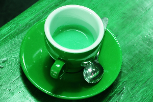
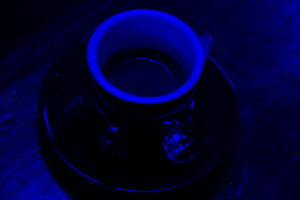
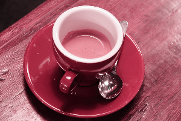
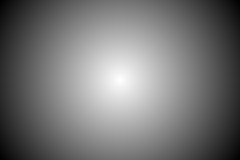
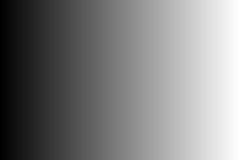
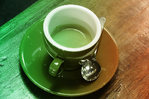
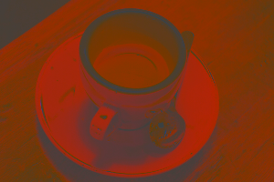
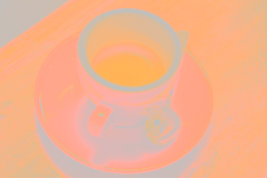

RGB Composition
bundle_image3DIntensity_rgb_composition_factory closes the typed path from MAGE's 2D intensity chromosome back to its RGB chromosome. It lets independently evolved red, green, and blue planes become an RGB image and lets an evolved intensity map control a channel, a continuous mask, a spatial blend, or output luminance.
Bundle contract
| Property | Contract |
|---|---|
| Getter | get_extension_rgb_compositionimg() |
| Specialization | I <: SizedImage3D{H,W,3,IntensityPixel{T}} |
| 2D inputs | same-size SImage2D{H,W,IntensityPixel{U}}; underlying numeric types may differ |
| RGB inputs | exactly the specialized type I |
| Output | exactly I, with the same size and finite values in [0,1] |
| MAGE arity | 1, 2, or 3; never more than 3 |
| Invalid control pixels | finite values are clamped to [0,1]; NaN and infinities become zero |
This is an extension bundle. It deliberately does not duplicate identity_rgb or return_rgb; add it after the basic RGB bundle:
using MAGE
include(joinpath(dirname(pathof(MAGE)), "..", "docs", "gallery_timing.jl"))
using ImageCore: N0f8
rgb = SImageND(IntensityPixel{N0f8}.(rand(32, 32, 3)))
rgb_type = typeof(rgb)
basic_rgb_bundle = only(get_extension_rgbimg())
composition_bundle = only(get_extension_rgb_compositionimg())
basic_rgb_bundle[1].name, basic_rgb_bundle[2].name, length(composition_bundle)(:identity_rgb, :return_rgb, 8)Both bundles are factory bundles and must be specialized with rgb_type before being inserted into the RGB-output Library.
Operators
| Function | Inputs | Result |
|---|---|---|
compose_rgb(red, green, blue) | three intensity planes | places them in RGB channel order |
gray_to_rgb(gray) | one intensity plane | repeats it in all three channels |
replace_red_rgb(rgb, red) | RGB plus intensity plane | replaces only red |
replace_green_rgb(rgb, green) | RGB plus intensity plane | replaces only green |
replace_blue_rgb(rgb, blue) | RGB plus intensity plane | replaces only blue |
multiply_rgb_intensity(rgb, mask) | RGB plus intensity map | continuously multiplies every channel by the map |
alpha_blend_rgb(foreground, background, alpha) | two RGB images plus intensity map | alpha*foreground + (1-alpha)*background |
set_luminance_rgb(rgb, luminance) | RGB plus target intensity map | adds a common channel offset to replace Rec. 709 luminance, with clipping |
These operators have image operands rather than scalar parameters. The examples below therefore vary the operand maps. A binary-valued intensity map is valid, but retaining it as an intensity image also permits soft boundaries.
Coffee input and operand examples
Constructing RGB from three planes
The first result reconstructs the source. The other two demonstrate that each input is an ordinary evolved intensity image: channels can be permuted, filtered, masked, or replaced before composition.

compose_rgb(R,G,B)
compose_rgb(B,R,G)
compose_rgb(0,0,B)Replicating and replacing planes
gray_to_rgb(Y)replace_red_rgb(rgb,Y)replace_green_rgb(rgb,Y)
replace_blue_rgb(rgb,Y)Continuous masks and alpha blending
An all-zero intensity mask returns an all-black image of the specialized RGB type. It never returns nothing or a 2D image.

multiply_rgb_intensity(rgb,Y)multiply_rgb_intensity(rgb,radial)

alpha_blend_rgbReplacing luminance
The common channel offset preserves colour differences until clipping at zero or one becomes necessary. The middle example uses the source's own luminance and therefore reconstructs it up to pixel quantization.


API
MAGE.image3D_rgb_composition — Module
Cross-chromosome composition of typed 2D intensity images and RGB images.
Bundles
MAGE.image3D_rgb_composition.bundle_image3DIntensity_rgb_composition_factory — Constant
bundle_image3DIntensity_rgb_composition_factoryRGB-output bridge operators. Each factory is specialized with a concrete SImage3D{height,width,3,IntensityPixel{T}} output type and accepts same-size 2D IntensityPixel images, RGB images of the specialized type, or both.
The bundle contains compose_rgb, gray_to_rgb, the three channel-replacement operators, continuous intensity masking, spatial alpha blending, and luminance replacement. Every callable has at most three effective MAGE inputs and always returns the exact specialized RGB type with finite channel values in [0,1]. Intensity control pixels are clamped to that interval and non-finite pixels are treated as zero.
This is an opt-in extension through get_extension_rgb_compositionimg. It does not repeat the basic RGB bundle's leading identity_rgb and return_rgb functions, so place it after get_extension_rgbimg().
MAGE.image3D_rgb_composition.compose_rgb_image3D_factory — Function
compose_rgb_image3D_factory(::Type{I})Specialize compose_rgb(red, green, blue) -> I. The inputs are three same-size 2D intensity images representing the red, green, and blue output planes. They may use different underlying numeric types; each pixel is sanitized to [0,1].
MAGE.image3D_rgb_composition.gray_to_rgb_image3D_factory — Function
gray_to_rgb_image3D_factory(::Type{I})Specialize gray_to_rgb(gray) -> I, replicating one same-size intensity image into all three RGB channels.
MAGE.image3D_rgb_composition.replace_red_rgb_image3D_factory — Function
Specialize replace_red_rgb(rgb, red) -> I, replacing only the red channel with a same-size intensity image.
MAGE.image3D_rgb_composition.replace_green_rgb_image3D_factory — Function
Specialize replace_green_rgb(rgb, green) -> I, replacing only the green channel with a same-size intensity image.
MAGE.image3D_rgb_composition.replace_blue_rgb_image3D_factory — Function
Specialize replace_blue_rgb(rgb, blue) -> I, replacing only the blue channel with a same-size intensity image.
MAGE.image3D_rgb_composition.multiply_rgb_intensity_image3D_factory — Function
multiply_rgb_intensity_image3D_factory(::Type{I})Specialize multiply_rgb_intensity(rgb, mask) -> I. A same-size intensity map continuously scales all three channels per pixel. Zero produces typed RGB black and one preserves the source pixel.
MAGE.image3D_rgb_composition.alpha_blend_rgb_image3D_factory — Function
alpha_blend_rgb_image3D_factory(::Type{I})Specialize alpha_blend_rgb(foreground, background, alpha) -> I. The same-size intensity alpha map computes alpha*foreground + (1-alpha)*background at every pixel and channel.
MAGE.image3D_rgb_composition.set_luminance_rgb_image3D_factory — Function
set_luminance_rgb_image3D_factory(::Type{I})Specialize set_luminance_rgb(rgb, luminance) -> I. The target intensity map replaces Rec. 709 luminance by adding the same signed offset to all channels, which preserves channel differences until output clipping is required.
Timings for the examples
Measured during this documentation build. See Timing methodology for measurement limits and input cases that can make operators expensive.
rgb composition setup
Julia 1.13.2; znver4; 1 Julia thread(s); optimisation level 2.
Times are warmed wall-clock measurements of the actual calls above, including invokelatest and allocations. Loading, factory generation and image rendering are excluded. CPU load and garbage collection affect these values. The maximum is the slowest observed sample, not a worst-case bound.
Numeric-only plot calls of the same operator and arity are grouped: argument ranges cover the sampled values, the median is the median of the per-case medians, and the maximum covers every observed sample. Image calls keep a row for each input/parameter combination.
| Operator | Inputs | Output | Median (µs) | Observed max (µs) | Allocated bytes (median) | Cases / samples |
|---|---|---|---|---|---|---|
| No measured calls |
rgb composition gallery
Julia 1.13.2; znver4; 1 Julia thread(s); optimisation level 2.
Times are warmed wall-clock measurements of the actual calls above, including invokelatest and allocations. Loading, factory generation and image rendering are excluded. CPU load and garbage collection affect these values. The maximum is the slowest observed sample, not a worst-case bound.
| Input | Dimensions | Pixel storage |
|---|---|---|
| image #1 | 200×300 | IntensityPixel{FixedPointNumbers.N0f8} |
| image #2 | 200×300 | IntensityPixel{FixedPointNumbers.N0f8} |
| image #3 | 200×300 | IntensityPixel{FixedPointNumbers.N0f8} |
| image #4 | 200×300 | IntensityPixel{FixedPointNumbers.N0f8} |
| image #5 | 200×300 | IntensityPixel{FixedPointNumbers.N0f8} |
| image #6 | 200×300×3 | IntensityPixel{FixedPointNumbers.N0f8} |
| image #7 | 200×300 | IntensityPixel{FixedPointNumbers.N0f8} |
| image #8 | 200×300×3 | IntensityPixel{FixedPointNumbers.N0f8} |
| image #9 | 200×300 | IntensityPixel{FixedPointNumbers.N0f8} |
| image #10 | 200×300 | IntensityPixel{FixedPointNumbers.N0f8} |
| image #11 | 200×300 | IntensityPixel{FixedPointNumbers.N0f8} |
Numeric-only plot calls of the same operator and arity are grouped: argument ranges cover the sampled values, the median is the median of the per-case medians, and the maximum covers every observed sample. Image calls keep a row for each input/parameter combination.
| Operator | Inputs | Output | Median (µs) | Observed max (µs) | Allocated bytes (median) | Cases / samples |
|---|---|---|---|---|---|---|
compose_rgb | image #1; image #2; image #3 | 200×300×3, IntensityPixel{FixedPointNumbers.N0f8} | 206.93 | 224.91 | 180216 | 1 / 3 |
compose_rgb | image #3; image #1; image #2 | 200×300×3, IntensityPixel{FixedPointNumbers.N0f8} | 688.56 | 27662.61 | 180216 | 1 / 3 |
compose_rgb | image #4; image #4; image #3 | 200×300×3, IntensityPixel{FixedPointNumbers.N0f8} | 207.51 | 221.59 | 180216 | 1 / 3 |
gray_to_rgb | image #5 | 200×300×3, IntensityPixel{FixedPointNumbers.N0f8} | 176.5 | 192.24 | 180136 | 1 / 3 |
replace_red_rgb | image #6; image #5 | 200×300×3, IntensityPixel{FixedPointNumbers.N0f8} | 192.17 | 196.24 | 180200 | 1 / 3 |
replace_green_rgb | image #6; image #5 | 200×300×3, IntensityPixel{FixedPointNumbers.N0f8} | 191.35 | 200.73 | 180200 | 1 / 3 |
replace_blue_rgb | image #6; image #5 | 200×300×3, IntensityPixel{FixedPointNumbers.N0f8} | 194.03 | 194.81 | 180200 | 1 / 3 |
multiply_rgb_intensity | image #6; image #5 | 200×300×3, IntensityPixel{FixedPointNumbers.N0f8} | 260.63 | 261.84 | 180200 | 1 / 3 |
multiply_rgb_intensity | image #6; image #7 | 200×300×3, IntensityPixel{FixedPointNumbers.N0f8} | 248.95 | 262.82 | 180200 | 1 / 3 |
multiply_rgb_intensity | image #6; image #4 | 200×300×3, IntensityPixel{FixedPointNumbers.N0f8} | 250.3 | 257.93 | 180200 | 1 / 3 |
alpha_blend_rgb | image #6; image #8; image #9 | 200×300×3, IntensityPixel{FixedPointNumbers.N0f8} | 433.21 | 486.61 | 180216 | 1 / 3 |
set_luminance_rgb | image #6; image #10 | 200×300×3, IntensityPixel{FixedPointNumbers.N0f8} | 401.55 | 418.0 | 180200 | 1 / 3 |
set_luminance_rgb | image #6; image #5 | 200×300×3, IntensityPixel{FixedPointNumbers.N0f8} | 441.39 | 453.08 | 180200 | 1 / 3 |
set_luminance_rgb | image #6; image #11 | 200×300×3, IntensityPixel{FixedPointNumbers.N0f8} | 402.06 | 495.13 | 180200 | 1 / 3 |